01 · Orientation
The two portals
Sporting Pearls runs two secure, password-protected areas alongside the public website. They are the academy's working backbone: every website form lands in the staff portal, and every approved family gets a private window into their child's football life through the parent portal. You do not need to install anything — both portals open in any modern browser, on a phone, tablet or computer.
Portal accounts are created by the academy office only — there is no public sign-up. Passwords are never shared by email, and every welfare case is visible only to the family involved and authorised staff.
02 · Staff portal
Signing in
Open the staff portal address in your browser. You will see the sign-in card below. Enter the username and password given to you by the academy office and select Sign in. If you type either one wrong, the page simply asks again — nothing is lost.
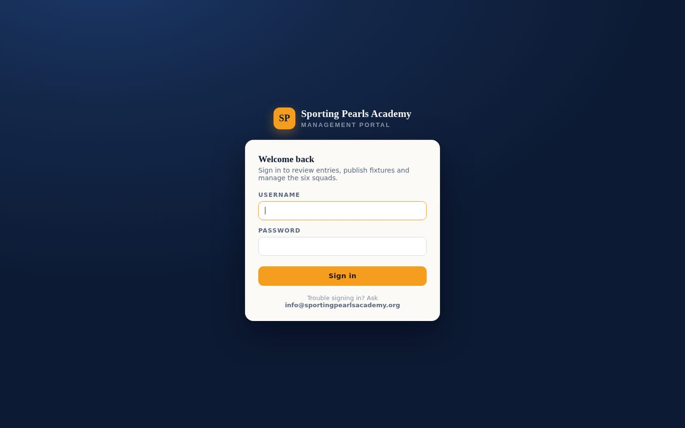
Your username (not your email) and password. The portal remembers you on this device for a while after sign-in.
Ask the academy office to reset it from the Access & Security section (see section 05) — a fresh temporary password is issued and you change it at next sign-in. Passwords are never sent by email.
03 · Staff portal
The desk at a glance
After signing in you land on the desk — a single screen with everything behind its own tab. Across the top you will see the main navigation: Overview, Submissions, Players, Fixtures, Access & Security, Announcements and the Welfare desk. The counters on each tab update live, so the desk doubles as your morning read of what needs attention today.
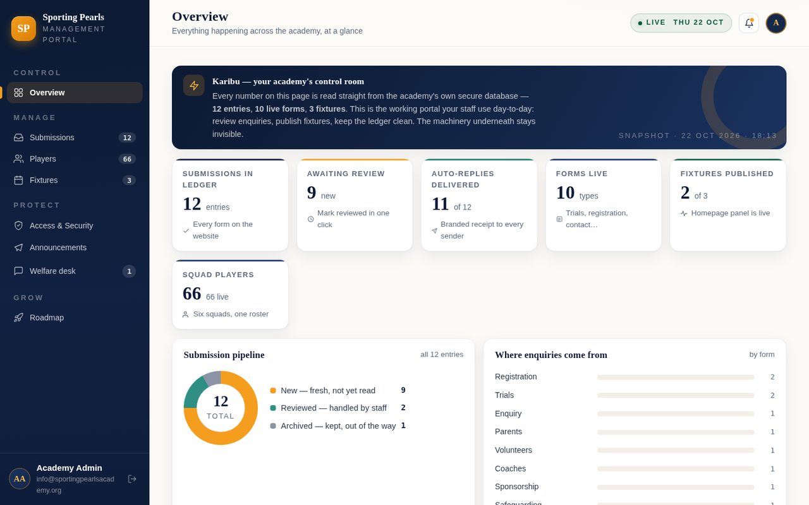
The overview shows the submission pipeline (how many entries are new, reviewed, archived or awaiting a reply), where enquiries came from, the latest activity across the academy, and shortcuts to the actions you perform most.
- Submission pipeline — every form that arrived from the website, grouped by status.
- Where enquiries come from — which forms are being used most this period.
- Latest activity — the newest entries and welfare updates in one feed.
- Everything you control — one-click shortcuts for the routine jobs (add a player, publish a fixture, send an announcement).
04 · Staff portal
Daily tasks, screen by screen
Reviewing form submissions
Select the Submissions tab. Every completed website form is listed here, newest first, with its reference number (for example SP-REG-… for registrations), the form it came from and when it arrived. Use the filter chips — New, Reviewed, Archived, Reply pending — to focus on what still needs work, or Export CSV to take the whole list into Excel for reporting.
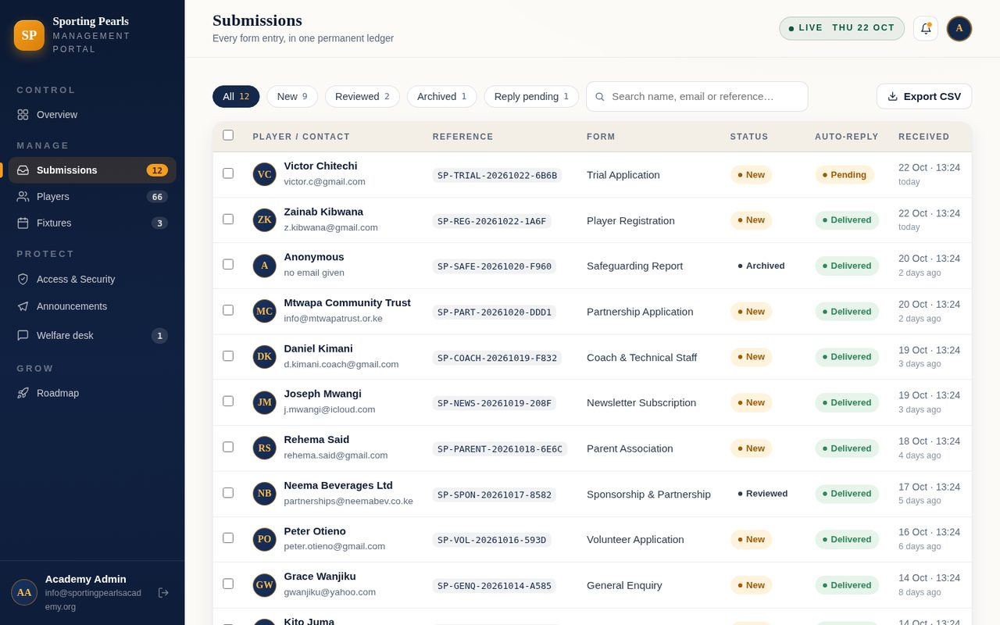
Filter chips narrow the list by status; each row shows the reference, the form type, who submitted it and when. Select any entry to open it.
Opening an entry shows the family's full answers exactly as they filled them in — contact details, the player's age group, anything they wrote in their own words. From here you can:
- Change the status — move an entry from New to Reviewed once someone has looked at it, or Archive it when it is finished.
- Approve & invite guardian — the most important button on a registration: it creates the parent's portal account and (when email is enabled) sends them their private activation link.
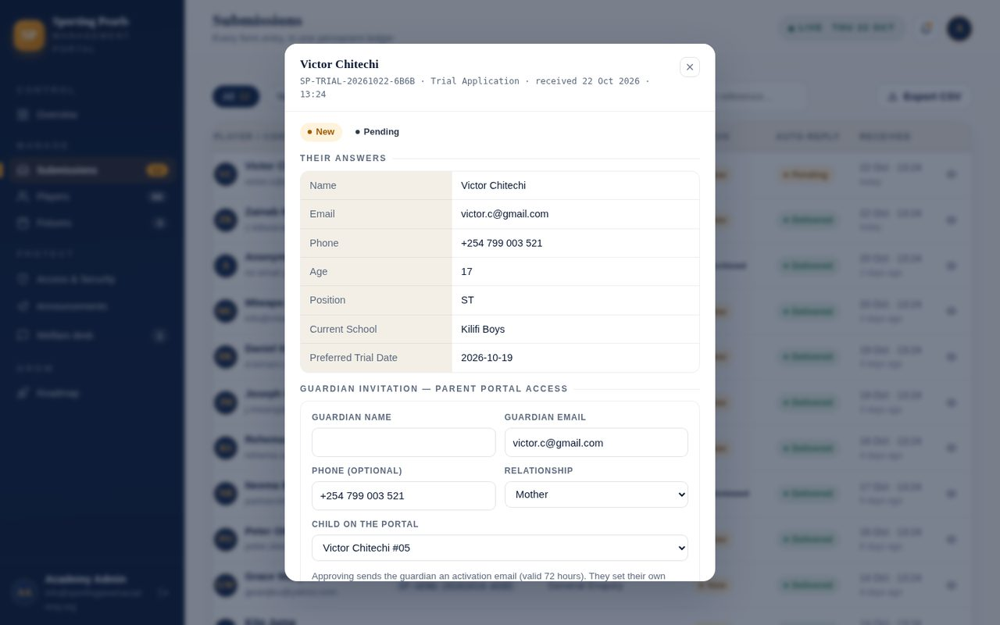
The full answers on the left; the action panel on the right. "Approve & invite guardian" moves a registration from paperwork to a live parent account in one step.
Managing players
The Players tab is the academy register — every squad and every player, with shirt numbers, positions, ages and photos. Select a player to edit their details, upload a new photo, mark them as a captain, or publish/unpublish them from the public squad page. New players can be added directly here when they arrive outside the website forms.
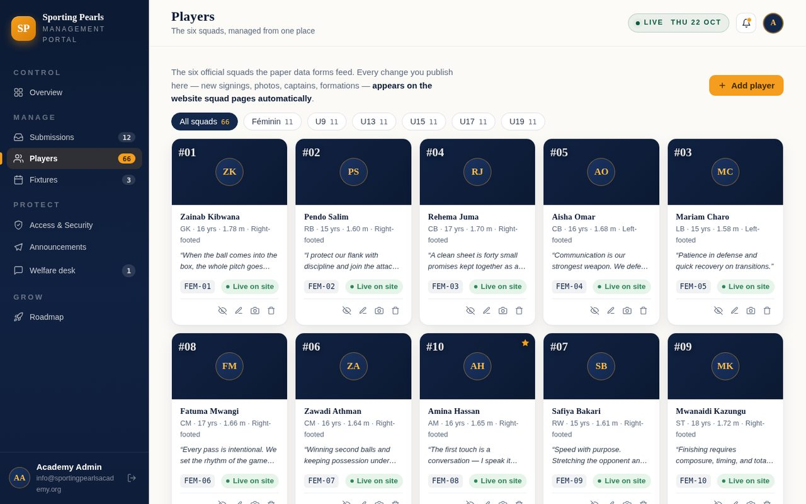
Squads are grouped by age level from Foundation to U19. Each player card shows their photo, squad, number and position — select any card to edit.
Publishing fixtures
The homepage's match panel is fed from the Fixtures tab. Add a fixture with the team, opponent, competition, date, kick-off and venue, and switch it between draft and published with one click — published fixtures appear on the website immediately, drafts stay hidden until you are ready. After the match, mark the result to keep the panel current.
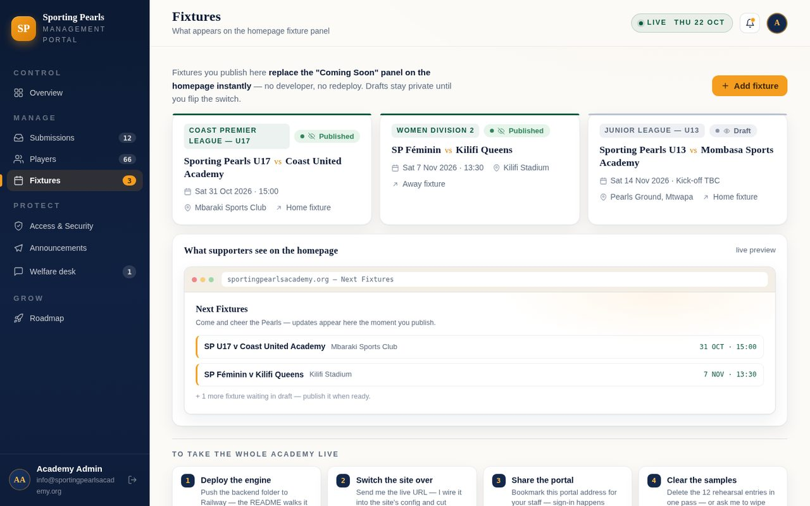
Each fixture shows team, opponent, competition, date and venue, with a publish toggle. Published fixtures feed the homepage match panel automatically.
Announcements
The Announcements section writes the news parents see in their portal. Compose a title and body, choose whether to pin it to the top of the parents' board, select which squads it concerns (or send it to everyone), and publish. Parents who have not yet read an announcement are counted for you, so you can see the reach of each message.

The composer on the left; previously sent announcements with their read counts on the right. Pinned items stay at the top of the parents’ board.
The welfare desk
Every parent question, concern and complaint arrives at the Welfare desk. Cases are grouped as Open, Resolved or Closed, each showing the family, the topic (fees, facilities, transport, safeguarding…), and how many replies it has had. Open a case to read the full history and add your reply — parents see it in their portal the moment you respond. Cases can be categorised and escalated, and nothing is ever deleted: the full history stays on file.

The case list with status filters. Reply threads are kept in full inside each case — the audit trail for every concern raised by a family.
05 · Staff portal
Access & security
The Access & Security tab is the admin corner. From here staff with the right permissions can reset another staff member's password, review who has an account, and see recent sign-in activity. It is also where guardian invitations are tracked — you can see which parents were invited, whether they have activated their account yet, and resend an invitation if the link expired.
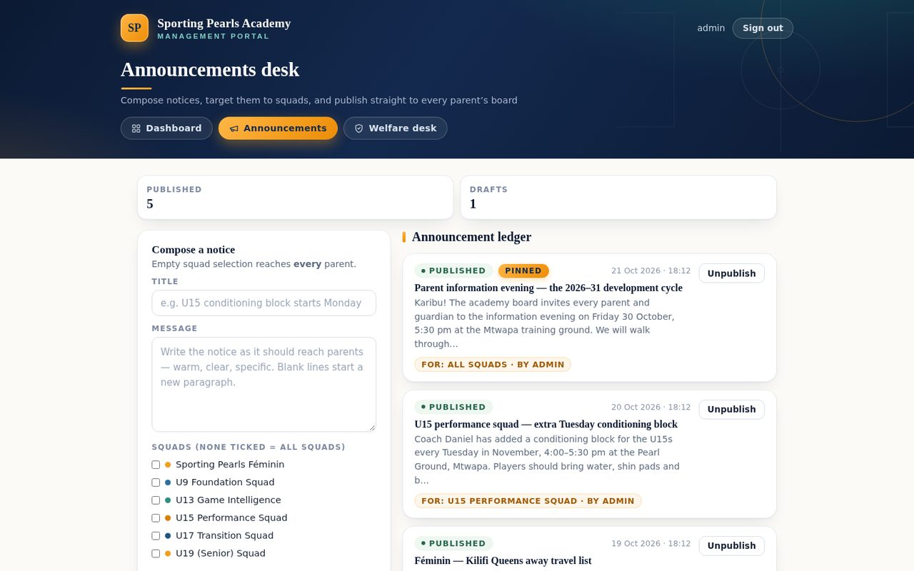
Password resets, account list and guardian-invite tracking in one place. Invites that were never activated can be resent with one click.
Confidential safeguarding reports from Form 10 are handled with extra care — access is limited, and the reporting parent or member of the public receives a reference number they can use to follow up anonymously. See the Safeguarding page for the full procedure.
06 · Parent portal
First-time setup — your invitation
Parent accounts open by invitation. When your child's registration is approved, the academy sends an invitation to the email address you used on the form. The email contains a private link that works for a limited time — open it and you will be asked to set your own password. This is the only time you choose a password; after that you simply sign in.
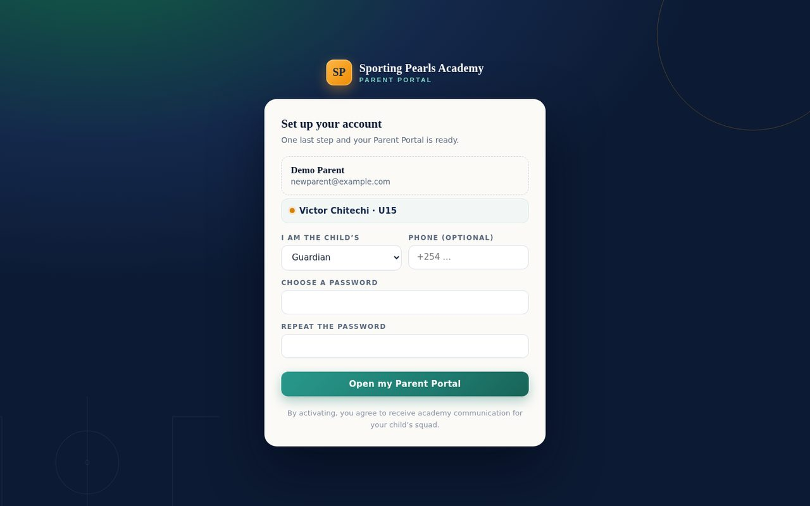
Type your chosen password twice. Choose something you will remember — the portal accepts strong passwords of at least 8 characters.
- The invitation link expires after a couple of days — if it has expired, the academy office can send a fresh one.
- One account per family email: if you registered two children, both appear under the same sign-in.
07 · Parent portal
Signing in
Open the parent portal address and sign in with your email address (the one your invitation was sent to) and the password you chose. The portal works well on a phone — most parents keep it bookmarked there.
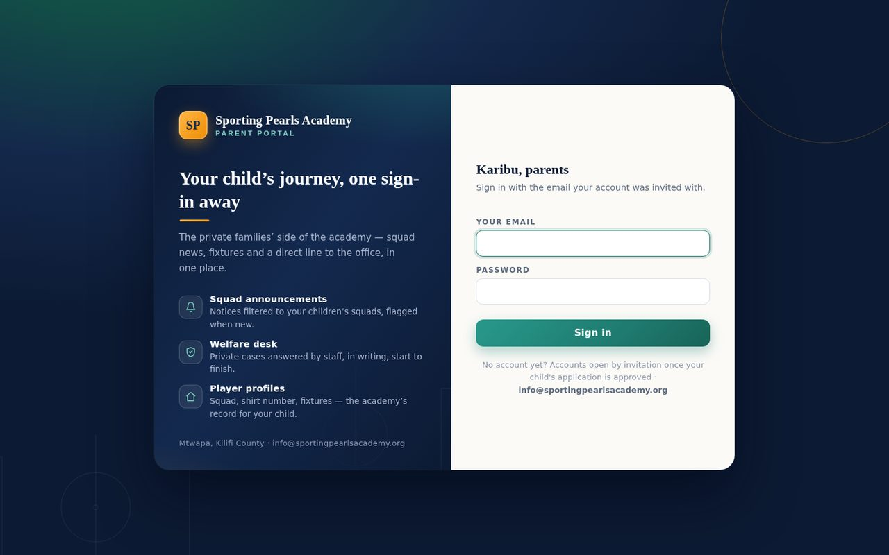
Your email and password. After several wrong attempts the portal pauses for security — wait fifteen minutes and try again, or ask the office for a reset.
After signing in you land on your overview: cards for your children, your unread announcements and anything open at the welfare desk, with the newest announcements listed below.
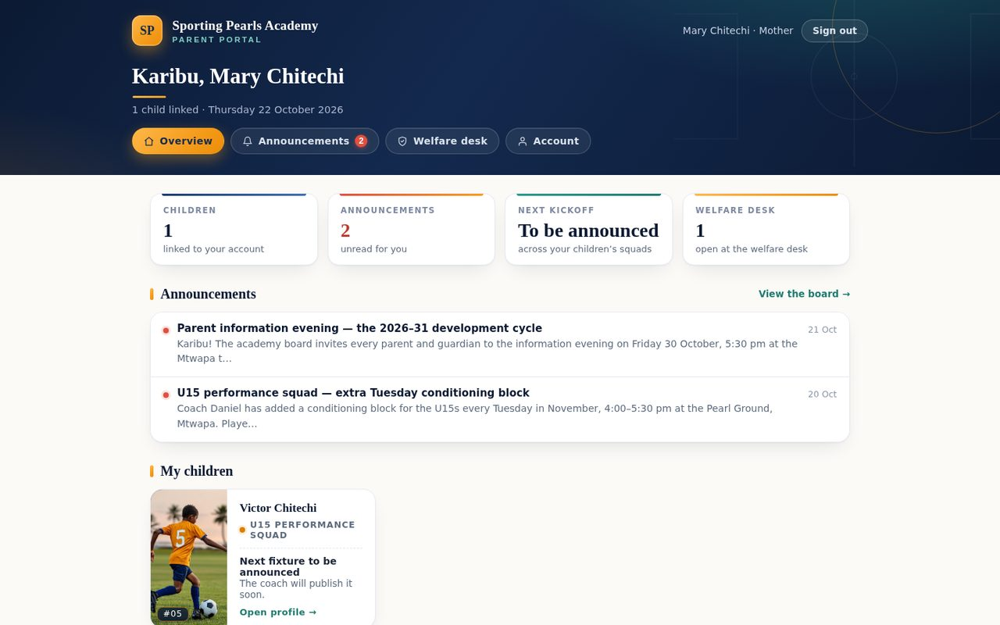
Everything that matters at a glance: your linked children, unread announcements and open welfare cases — with the latest news from the academy below.
08 · Parent portal
Announcements & the welfare desk
Reading announcements
Academy news reaches you through the Announcements page — training changes, match-day plans, parent evenings and season news. Items can be pinned to the top so they stay visible, and those addressed to specific squads (for example the U15s) appear only for those families. The counter on the menu shows how many you have not read yet.
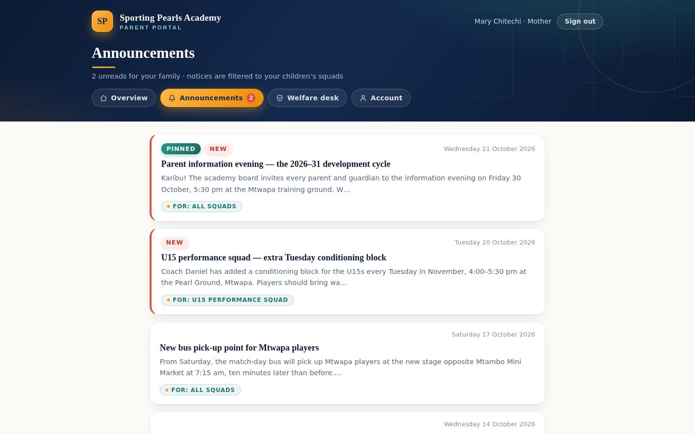
Newest items first, pinned notices on top. Select any announcement to read the full text — the unread count clears as you read.
Raising a question or concern
The welfare desk is your private channel to the academy. From here you can open a case about anything — fees and payments, facilities, transport, kit, or a concern about your child's welfare. Choose a subject, describe what happened, and send. Your case goes to the staff welfare desk, and you will see every reply in the same thread — no lost WhatsApp messages, no phone tag.
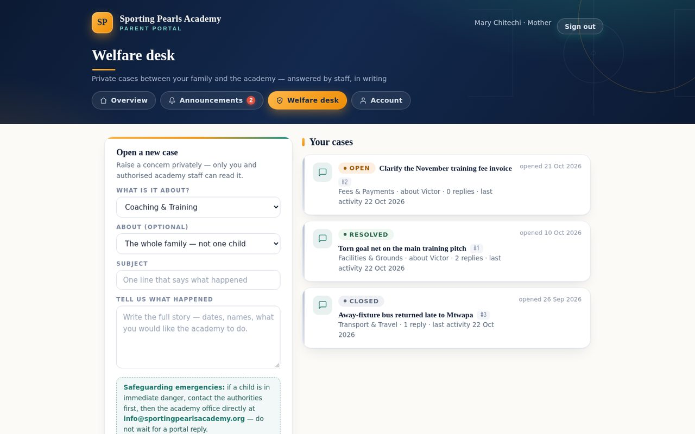
Your cases on the right with their live status (Open, Resolved, Closed); the new-case form on the left. Cases are private to you and the authorised staff.
Inside a case you can follow the whole conversation and add to it at any time — the thread keeps every message in order, with dates, so nothing depends on memory.
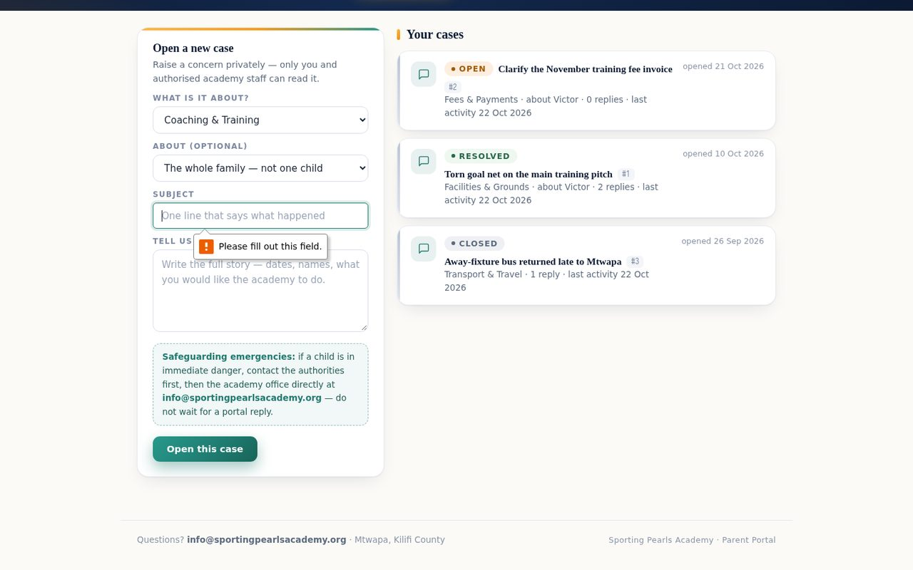
The full reply thread for one case. Staff replies appear here; type below to continue the conversation.
The welfare desk is for everyday questions and concerns. If a child may be in danger, use the confidential safeguarding report form instead — it can be filed anonymously and is handled under the academy's Safeguarding Policy.
09 · Parent portal
Your child & your account
Your child's profile
Each child linked to your account has their own page: squad, shirt number, position, and the academy's notes on their season. It is the same information the staff register uses — kept up to date by the coaches, visible only to your family.
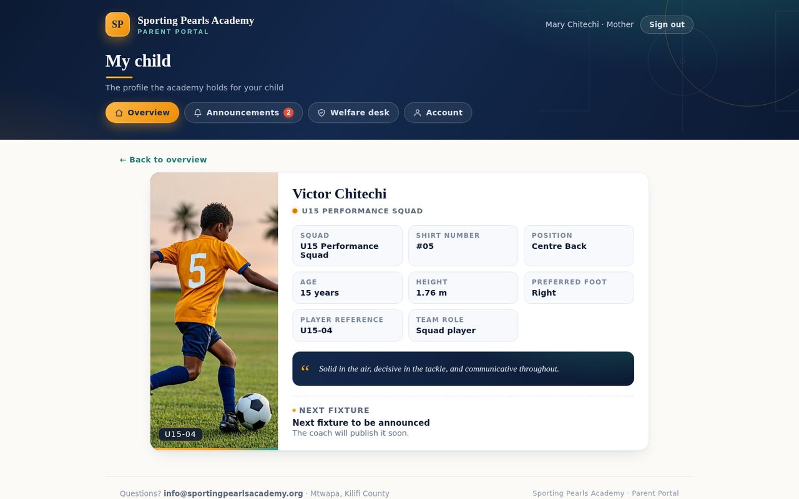
Squad, number, position and season notes for your player. Only you and the academy staff can see this page.
Your account
The Account page manages your own details: change your password, update your phone number, and check which email address is on file. If your email or phone changes, update them here so the academy can always reach you.
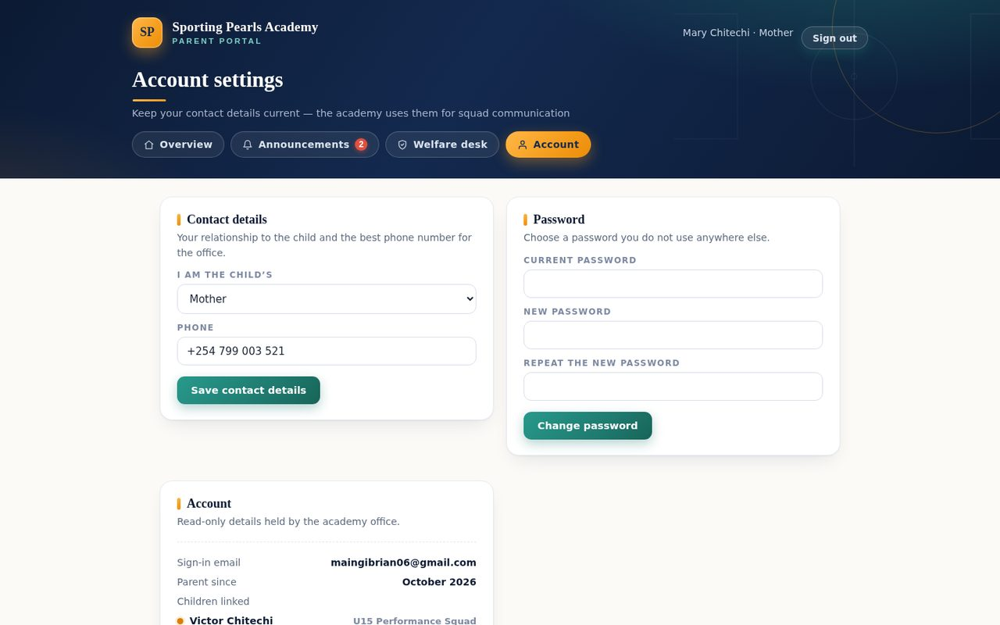
Change your password and contact details. Your email address is also your sign-in name.
10 · Reference
Good to know
| Question | Answer |
|---|---|
| I forgot my password. | Parents: ask the academy office for a reset link. Staff: a colleague with admin rights resets it from Access & Security. |
| My invitation link expired. | Contact the office — a fresh invitation can be sent in seconds and the old link becomes harmless. |
| Can two parents share one login? | Each guardian gets their own account, invited separately, so welfare cases stay private to the person who raised them. |
| Does the portal work on my phone? | Yes — both portals are built for phone screens first. Bookmark the sign-in page in your browser. |
| Who can see my welfare case? | Only you and the authorised staff on the welfare desk. Cases are never visible to other families. |
| Is my data safe? | Portals run on the academy's own server over an encrypted connection, with accounts created by invitation only. |
Visit the academy office in Mtwapa, Kilifi County, or send a message through the contact form on this site. For anything about a child's safety, use the confidential safeguarding report form at any hour.